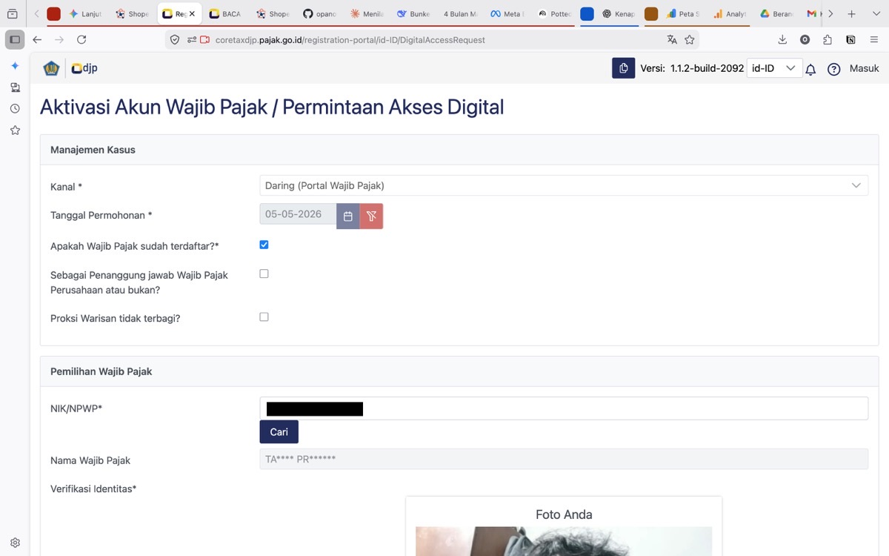
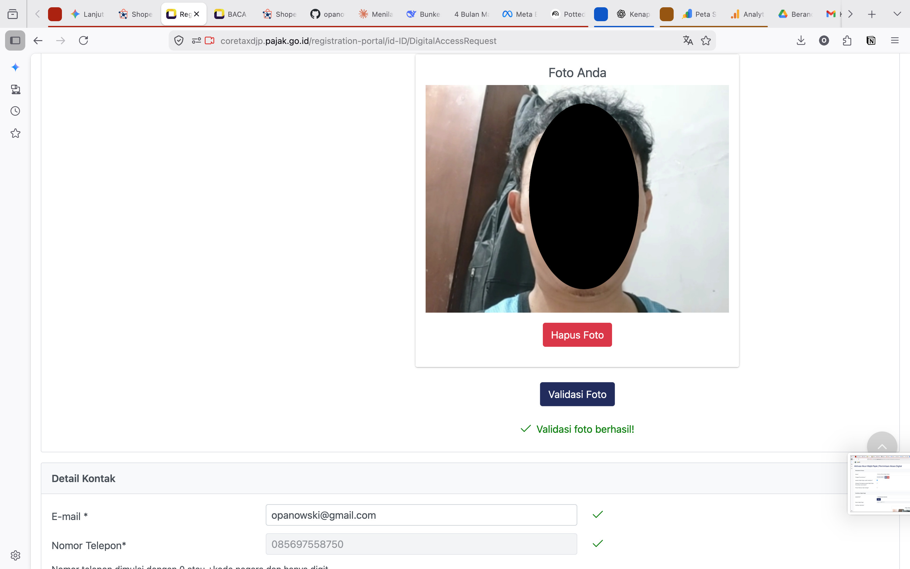
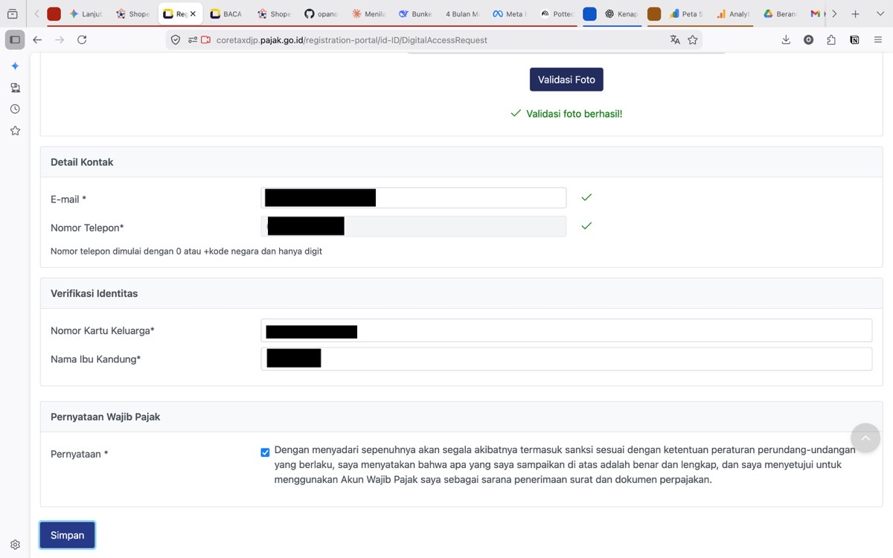
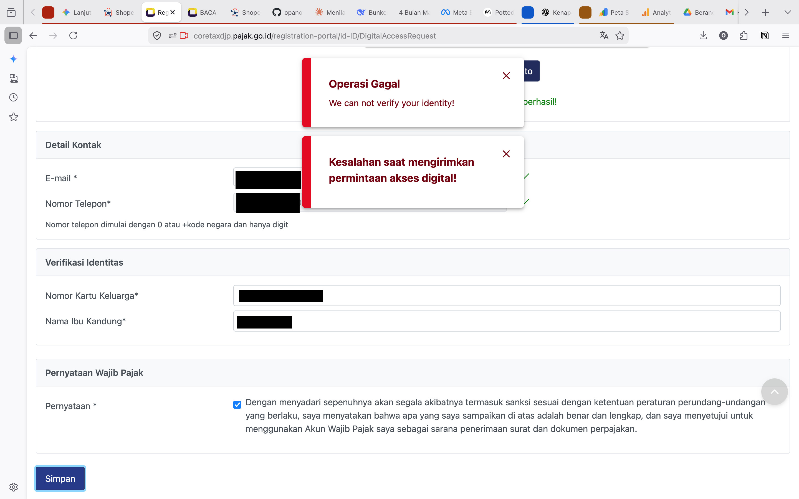

📓 Log #087
🚨 Sistem Pemerintah
💡 Tips & Trik
Drama Registrasi CoreTax:
Ketika 'Valid' Menjadi 'Gagal'
Niat taat pajak lewat portal CoreTax. Semua kolom centang hijau, validasi foto berhasil, pulsa sudah kepotong — tapi pas klik Simpan? "Operasi Gagal." Catatan lapangan dari MacBook Pro 2015 di Bunker Opanowski.
1
Pengisian Data Dasar — Lancar Jaya
Mulai dengan NIK dan data otentikasi awal. Firefox di MacBook render-nya normal, semua kolom isi hijau. Optimisme masih di angka 100%.

Tahap 1 · Input NIK & Data Dasar — Semua Hijau
2
Uji Biometrik — Setup Kamera Reno 4
Kamera bawaan MacBook Pro dianggap kurang proper, jadi gue sambungkan Oppo Reno 4 via Iriun Webcam. Gambar jadi lebih bening dan tajam. Sistem merespon positif — pakai kacamata maupun tidak tetap lolos. Notifikasi hijau muncul: "Validasi foto berhasil!"

Tahap 2 · Validasi Biometrik — Reno 4 via Iriun Webcam

"Nah, ini baru namanya sistem! Foto tajam, muka kedeteksi pakai kacamata pun lolos — gue optimis banget di titik ini."
3
Validasi Kontak — Pulsa Kepotong
Isi nomor telepon dan email. Ada "biaya administrasi" berupa pulsa buat OTP — ya sudah, isi dulu. Kode masuk, email terverifikasi, data keluarga (KK & nama ibu kandung) sudah lengkap. Semua centang hijau. Tinggal satu tombol: SIMPAN.

Tahap 3 · Data Kontak & OTP — Semua Terverifikasi
!
Plot Twist — "Operasi Gagal"
Tombol Simpan ditekan. Sistem mengeluarkan pesan error merah darah: "Operasi Gagal — We can not verify your identity!" dan "Kesalahan saat mengirimkan permintaan akses digital!" Padahal tiga langkah sebelumnya sudah berhasil semua.

Tahap 4 · Plot Twist — "Operasi Gagal"

"Tiga langkah berhasil semua, pulsa udah kepotong — terus dikasih 'Operasi Gagal'? Ini bukan kesalahan gue, ini sistemnya yang setengah matang."
⚠️ Inkonsistensi Sistem
Dalam logika pemrograman mana pun, kalau validasi foto sudah "berhasil" di langkah 2, artinya biometrik sudah cocok dengan database kependudukan.
Tapi sistem malah bilang "cannot verify identity" saat data mau disimpan. Setup kamera sudah pakai Reno 4, pulsa sudah kepotong, semua input sudah divalidasi per langkah — dan hasilnya tetap gagal.
Ini bukan kesalahan user. Ini inkonsistensi sistem yang fundamental.
✅ Yang Dipelajari Hari Ini
📸 Iriun Webcam — solusi upgrade kamera MacBook jadul ke HP untuk kebutuhan verifikasi biometrik
🎨 GIMP — belajar sensor/blur data pribadi di gambar sebelum dipublikasi
🧘 Mental Health — tau kapan harus berhenti dan balik ke kebun daripada emosi lanjut ngurusin sistem setengah matang

"Sistem gagal, tapi skill dapat — belajar Iriun, belajar GIMP, tau kapan harus mundur. Hari ini tetap produktif."
📋 Status & Rencana
CoreTax → Ditunda sampai server pusatnya sehat dan sistemnya konsisten
Shopee Affiliate → On hold, tunggu pajak beres dulu
Bibit anggur Moondrop → Tetap jalan, jauh lebih konsisten dan logis dari portal CoreTax
"Sebagai orang yang biasa ngoprek hardware dan bikin web sendiri,
sistem ini belum siap tempur."
sistem ini belum siap tempur."
CATATAN LAPANGAN · VILLA CIRACAS · 5 MEI 2026